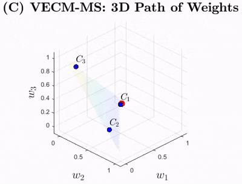

Zheng Fan
Economist & Quantitative Researcher • The University of Melbourne
I recently obtained my PhD in Economics at The University of Melbourne. My primary research focuses on Bayesian statistics, shrinkage priors, high-dimensional time series modelling, and high-performance computing (HPC) for econometric applications. I am currently on the job market and actively seeking academic and quantitative research opportunities.

Research Interests
My work develops Bayesian econometric methodology and computational tools to solve high-dimensional forecasting and structural modeling challenges in macroeconomics and finance.
News & Updates
-
Revise & Resubmit
"A New Perspective of the Meese-Rogoff Puzzle: Application of Sparse Dynamic Shrinkage" is currently Revise & Resubmit at the Journal of Applied Econometrics.
-
Conference
Presented research at ESOBE 2025 (Melbourne), EcoSta 2025 (Waseda University, Tokyo), and the 18th CFE-CMS (King's College London).
Featured Research • Job Market Paper
View all papers →Bayesian Model Ensembling with Regularised Predictive Synthesis
Job Market Paper
Abstract: This paper develops a new Bayesian framework for forecast combination that embeds a Vector Error Correction Model structure within a latent dynamic factor representation for model weights. By imposing cointegration across the latent weight structure, the framework establishes a structured yet flexible regularization on their long-run behavior while allowing for short-term deviations. The specification enables the ensemble weights to evolve around steady states and to adjust rapidly toward a new steady state when the predictive environment changes. Monte Carlo studies and empirical applications to economic growth and inflation forecasting show that the proposed approach delivers substantial improvements in predictive performance over cutting-edge methods. The framework incorporates key features found in state-of-the-art approaches by providing flexible weight dynamics that permit non-convex weights to be negative and allow quick transitions across multiple steady configurations simultaneously.